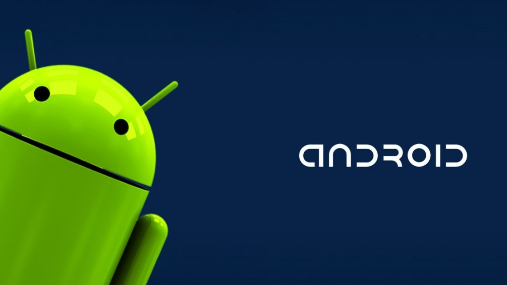

¿Que es Android?
Android es un sistema operativo móvil basado en el núcleo Linux y otros software de código abierto. fue diseñado para dispositivos móviles con pantalla táctil como teléfonos inteligentes, tablets, relojes inteligentes Wear OS, automóviles con otros sistemas a través de Android Auto, al igual los automóviles con el sistema Android Automotive y televisores Android TV.
Inicialmente fue desarrollado por Android Inc., que fue adquirido por Google LLC en 2005. Android fue presentado en 2007 junto con la fundación del Open Handset Alliance (un consorcio de compañías de hardware, software y telecomunicaciones) para avanzar en los estándares abiertos de los dispositivos móviles. El código fuente principal de Android se conoce como Android Open Source Project (AOSP), que se licencia principalmente bajo la Licencia Apache. Android es el sistema operativo móvil más utilizado del mundo, con una cuota de mercado superior al 90 % al año 2018, muy por encima de IOS.
La historia de Android
Android nació en el año 2003 de la mano de Rich Miner, Nick Sears, Chris White y Andy Rubin. Este grupo tenía la intención de crear dispositivos móviles que fueran más conscientes de la localización y las preferencias de los usuarios. Los comienzos de Android, totalmente en secreto, no fueron sencillos. El presupuesto se le redujo a Rubin a cero, y sólo un préstamo de Steve Perlman, íntimo amigo de Rubin, le permitió salir adelante.
En el año 2005, Google compró Android y la convirtió en una subsidiaria completa. Rubin, Miner y White pasaron a formar parte de Google tras la operación. La información en aquel entonces escaseaba acerca de qué proporcionaría Android a Google, y los rumores decían que la empresa del buscador entraría en el mercado móvil. Andy Rubin se puso manos a la obra y creó una plataforma móvil potenciada por el kernel Linux. Google prometió a fabricantes y operadoras un sistema flexible y actualizable.
Pasó el tiempo y hasta el año 2007, con la presentación del consorcio tecnológico Open Handset Alliance. En el que estaban empresas como HTC, Samsung, T-Mobile, Qualcomm y la propia Google, no se anunció oficialmente la existencia de Android. El progreso de Android fue positivo a partir de ese momento. Y no se tardó en ver en las tiendas el HTC Dream, en 2008, que sería el primer móvil en hacer uso de la plataforma operativa. Desde entonces Google ha cumplido con las promesas relacionadas con Android. El sistema ha llegado a todo tipo de plataformas y se ha actualizado, cada vez tomando como referencia un postre o dulce reconocible.
Caracteristicas
Una de las virtudes del sistema operativo Android reside en que hace uso de una interfaz de usuario fácil de manejar, con iconos y una buena disposición que se aprovecha sobre todo en dispositivos inteligentes. Google es reconocida por crear experiencias de utilización simplificadas al máximo en todos sus productos, algo que en Android se viene ofreciendo desde los orígenes. Android es una plataforma abierta, lo que significa que los fabricantes y operadoras pueden partir del sistema operativo y realizar modificaciones pensando en sus usuarios.

Cada una de las versiones incorpora cambios, mejoras y novedades. Haciendo que a cada nuevo postre que llega al mercado se incorpore alguna particularidad destinada a mejorar las posibilidades de los usuarios. Los dispositivos con Android se centran en el ahorro de energía. Algo para lo cual la plataforma está diseñada siempre teniendo el objetivo de hacer que la memoria RAM y el consumo de energía se encuentren al mínimo. Esto provoca que la inteligencia del propio sistema se tome por su mano la decisión de suspender las aplicaciones que están abiertas y que no han sido manualmente cerradas por el usuario. Por otro lado, al ser un sistema abierto esto ha ayudado mucho a su expansión entre las distintas empresas. Tanto famosas como secundarias, que ven una opción ideal para poder llegar a todo tipo de público partiendo de una plataforma que se sabe que funciona de forma más que correcta.
Más allá de lo básico
Lo interesante de Android es que el sistema ha conseguido aparcar la aparente exclusividad que tenía en cuanto a dispositivos móviles para saltar también a otros dispositivos. Se ha visto Android con éxito tanto en netbooks como en ordenadores portátiles y smartbooks. Es un sistema operativo que rinde de forma muy adecuada teniendo en cuenta sus claras limitaciones. Pronto también será la plataforma utilizada en la consola de videojuegos Ouya, y Google está trabajando para que Android sea el sistema con el que funcionen los electrodomésticos y hogares en general del futuro.